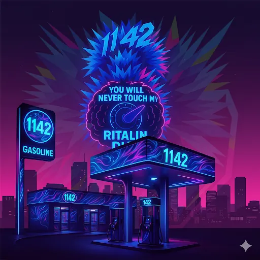

● LIVE REPORTPhase 04 · The Creator
Cole EverDark Founder
Researcher. Visionary. Disruptor. The Persona Matrix — six dimensions of a single unstoppable mind.
The disruptor. Challenges pharmaceutical orthodoxy. Named for the spirit of rebellion that drives the methylphenidate research series.
The researcher in the field. The one who does the work. Primary author of the 5-paper methylphenidate series. Scientific rigor personified.
The philosopher-chemist. Bridges the gap between pharmacology and consciousness. Where science meets the metaphysical.
The harm reductionist. Documenting the dark side of stimulant culture to protect the neurodivergent community from its dangers.
The observer. The chronicler. The voice that writes every research log, every archive entry. The one who keeps the record.
Behind every persona — one founder. The 1142 experience crystallized into perpetual motion. Inevitable.
St. Jimmy: Phenidate is a hallucinatory post-apocalyptic thriller where fiction becomes prophecy. What begins as a scrappy high school film project — Jimmy and his friends making a DIY monster movie about a dangerous black liquid — becomes reality when the real ferrofluid escapes a government lab, mutating into intelligent, explosive, metal-shifting predators.
From the wreckage emerges St. Jimmy. Not a costume — an exorcism. Draped in black, eyes burning with grief and voltage, fueled by vengeance and Ritalin, by heartbreak and hash. He moves through clouds of vapor and static like a ghost with a grudge, waging a one-man war on synthetic demons — both the ferrofluid monstrosities that stalk him and the opioid plague that haunts the survivors.
Based on a real person. Cities twist into liquid-metal labyrinths. Katrina's memory burns in every step. Jimmy's dwindling supply of methylphenidate keeps him just ahead of the ferrofluid's pull — but the tide is rising.
"This isn't a redemption story. It's the final broadcast of a man running out of road, fighting to outpace the end of the world with a camera in one hand and vengeance in the other."
The ferrofluid isn't just a monster — it's a hive mind learning how to hunt. The city twists. The cameras keep rolling. St. Jimmy keeps running.
Every breakthrough documented. Every discovery made. Every page of this site — in loving memory of Katrina Jade Mutch Hasler. ♥
1142 LABS · EST. DEC 22, 2019

From a single epiphany to a growing fortress of knowledge.
A 12-hour transformative experience beginning Dec 22, 2019 at 11:42 PM — the ontological foundation of the entire 1142 project. The spiritual jailbreak that started everything.
Combining LSD with low-dose Ritalin for deep creative exploration sessions. The first structured protocol of the 1142 research program.
First public platform sharing personal psychedelic experiences and raw data. The seed of the research movement. Cole calls in to CFNY 102.1 The Edge Toronto to talk about the project — the first public broadcast.
High-dose methylphenidate regimen revealed the full extent of what proper neurodivergent medication could do. A turning point in understanding the relationship between stimulants and cognitive function.
Breakthrough theory: oxidized methylphenidate may enhance cognitive function during psychedelic states. Cole is thrown out — the lowest point becomes the catalyst for the most productive research era yet.
Breakthrough discovery: LSD functions as a key for unlocking repressed memories and navigating deeply buried trauma. The brain's storage of experience reframed as a digital-like archive that specific chemical keys can access. Core to the 1142 consciousness research framework.
The full platform established. Canada's most comprehensive independent psychedelic and neurodivergent research hub goes live.
Transition from personal practice to a globally synchronized movement. 1142 begins coordinating communities of researchers and neurodivergent individuals worldwide. The monthly 22nd ritual becomes a shared collective event.
Domain shift and expansion. Research into Down Syndrome and Methylphenidate neuroprotection deepens. Third year in business.
After public advocacy and community support, Biphentin prescription successfully reinstated in Barrie. A victory for neurodivergent rights — the system forced to acknowledge what the research had long proven. Methylphenidate returned to its rightful owner.
The exhaustive chemical archive goes live. Every substance studied since 2019 — documented, catalogued, published. LSD. 2C-B. Psilocybin. Peyote. DMT. DOB. MDA. PCP. Full pharmacological profiles with history, mechanism, duration, and harm reduction protocols. The Chem Log is open.
Comprehensive modernization. Expanded chemical database, PDF archive, community network. Establishing the Fortress HQ — independent, self-funded, built from the ground up.
A black-market broadcast for science and street-level storytelling. The Store: gear and tools built with purpose. The signal continues.